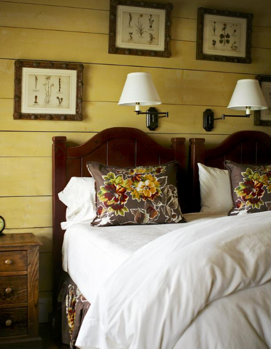

.png)
.PNG)
.PNG)
.PNG)
.PNG)
.PNG)
.JPG)
.JPG)
.PNG)
.PNG)


Happy weekend! I thought we would wander through some yellow on this fall weekend as I contemplate using more of it in my sons’ room – or maybe my daughter’s. Ever since I saw the Blackberry Farm bedroom above, I have been in the mood for yellow. Are you a fan of the color? I used to think of it mostly for spring, but if it goes in the direction of gold, it really warms up a space. Let’s start by wandering in another bedroom with those great painted plank walls.
hgtv.com
Are you familiar with Randy Florke’s work? He used to be an editor at Country Living magazine. He is also into real estate and has written a couple of books on reusing furniture, accessories,and building materials. His family’s home in a 1928 apartment in New York uses an abundance of yellow.
The next is not Randy Florke’s work. This pantry was done by Plain and Fancy cabinetry. Isn’t it a gorgeous little space?! I really need to find the rest of the kitchen that this pantry came from. I bet it is beautiful.
Not only am I wanting to add more yellow to my house, but I am also wanting to add it to my wardrobe. I love all the things pictured below – the sweater, the shoes, and the bag. Doesn’t this look perfect for fall? Just put it with a pair of jean, and you are ready to go practically anywhere.
I thought this table setting with the yellow autumn elements was really pretty. We need some leaves like that around here!
To wrap up our weekend wandering, here is a recipe for a weekend treat…crockpot boiled peanuts! I always make them on the stove, but a crockpot would also work. I hope you will make them, and then let me know how they turn out for you.
So add some yellow to your life, make some boiled peanuts, and enjoy your weekend!


.PNG)
Hi Kelly,
Oh my yes… yellow has so many possibilities… I painted our front hall a lovely deep mustard yellow and the wall leading up the stairs is a deep terra cotta. It sounds like it is way too bold but incredibly they really work! (The livingroom is a taupe with a tinge of green- I know!! But it works… really!). When we get back from our next big sailing trip I’m thinking I’d like to paint our bedroom a lovely warm yellow just like the one from Blackberry Farm, yes I would!
Now what’s all this about boiled peanuts? Peanuts in the shell and you boil them? Hmmmm… very curious! We Canadians (at least those of us in Alberta) just shell the peanuts and either eat them raw unsalted or have them roasted and salted… but boiled? My my my! Perhaps I’ll try them and start a trend up here!
Thanks, Kelly, for your great photos and ideas as usual…
Cath
——————————————————————–
Cath – I don’t think that is too much color…sounds very warm and inviting to me! I can’t believe you have never heard of boiled peanuts. Oh my goodness! I knew they were southern, but I did not realize how southern they really are. You definitely need to try them, and you must eat them hot. They are not good cold to me. You still have to shell them, but they are so good warm and salty. Go ahead and start the trend!
Kelly
Kelly,
I love certain shades of yellow. I was recently inspired to incorporate yellow somewhere in my house by visiting my friend’s house on Bainbridge Island in Washington. The has a collection of confit pots that inspired her to incorporate more yellow into their house. It’s such a cheery color. Keep us posted on foray into yellow. I do love the clothing items you showed.
Karen
———————————————————————-
Karen – Isn’t it funny what inspires us to do things?! How wonderful that you got to go to Bainbridge Island. When we took a trip out west a couple of years ago, we wanted to include Bainbridge Island in our itinerary, but it was just too far north to go. Lucky you! Glad you liked the clothing. I have GOT to do some clothing shopping sometime soon…hopefully this week. Thank you for adding your comments to the conversation here.
Kelly